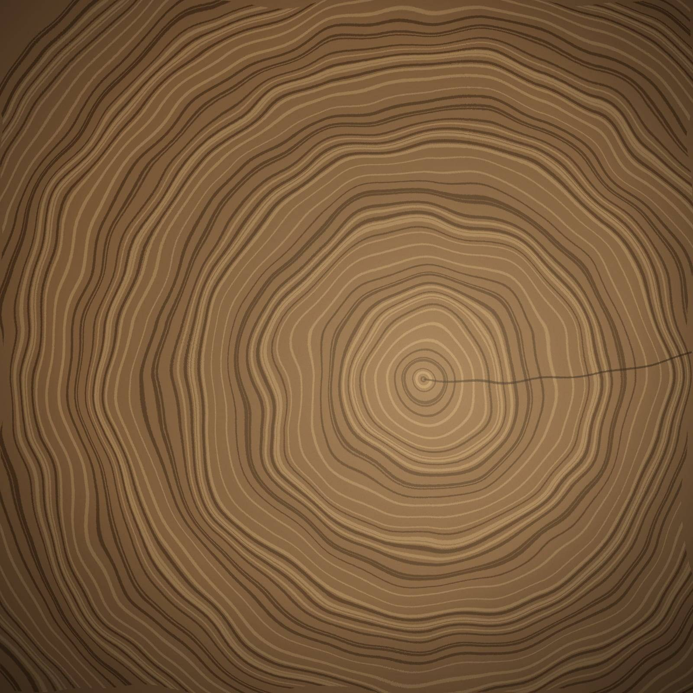
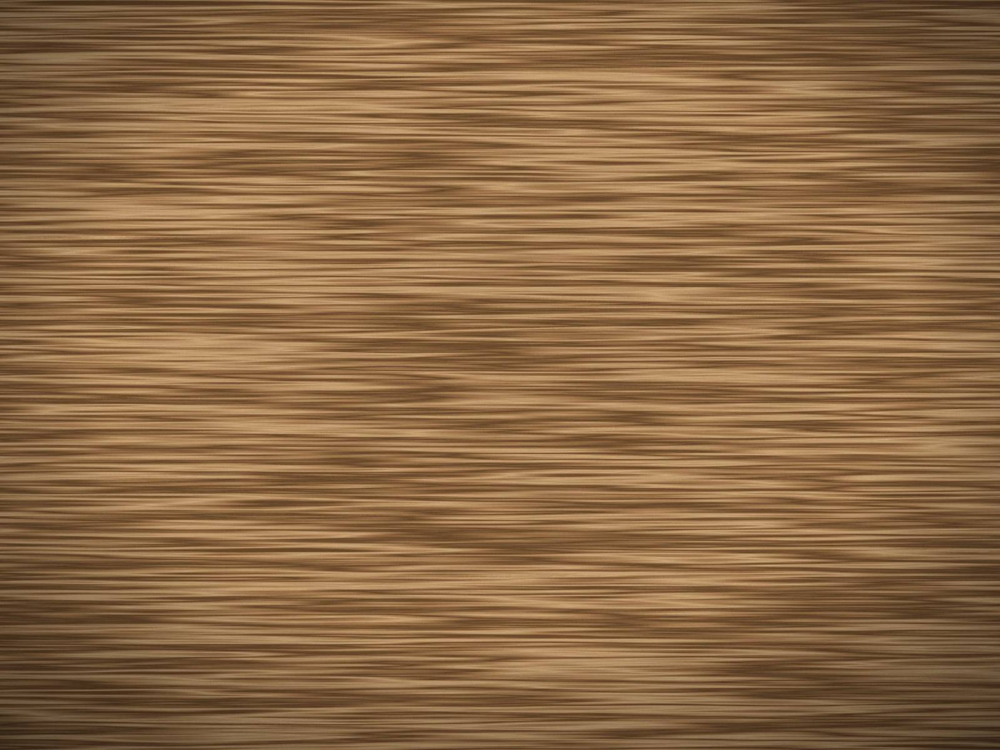
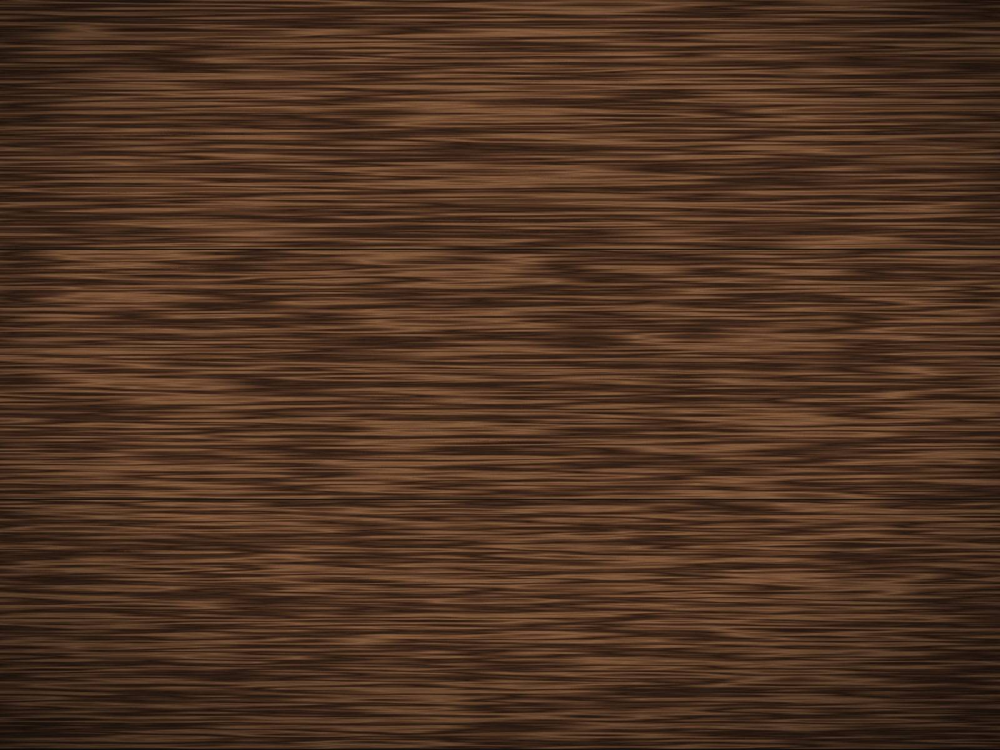
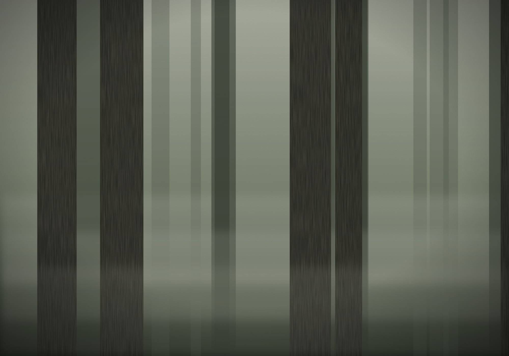

Eine Werkstatt, gebaut nach 25 Jahren Lernen.
DRVENO begann nicht mit einem Businessplan. Es begann mit einem Handwerker, einer langen Lehrzeit bei seinem Material und dem Entschluss, nach Hause zurückzukehren.

Wo alles begann.
Unser Gründer ist in Serbien aufgewachsen, zwischen Häusern, in denen Holz einfach das Material war, aus dem die Dinge gemacht wurden — Fenster, Türen, Tische, Dächer.
Für ihn war Holz nie nur ein Baustoff. Holz lebt. Es altert, es bewegt sich, es atmet, und es trägt die Spuren der Zeit.

Jahre des Lernens.
Viele Jahre lebte und arbeitete er in der Schweiz und sammelte Erfahrung in traditionellen Handwerken — unter anderem im Holzbau und als Steinmetz.
Die Schweiz lehrte ihn Präzision, Geduld und Respekt vor Dingen, die für die Dauer gebaut sind. Diese Jahre prägen die Arbeit der Werkstatt bis heute.

Holz statt Kunststoff.
Über Jahrzehnte hat er sich bewusst für Holz und gegen Materialien wie Kunststoff entschieden, besonders bei Fenstern.
Er ist überzeugt, dass die Dinge, die ein Zuhause umgeben, natürlich und reparierbar sein sollten — und mit dem Alter schöner werden dürfen.

Nach Hause.
Mit über fünfzig entschied er sich, nach Serbien zurückzukehren, wo seine Wurzeln sind, und die Werkstatt zu bauen, von der er immer geträumt hatte.
DRVENO ist das Ergebnis dieses Entscheids: eine Werkstatt, ganz dem Handwerk verschrieben, umgeben von Natur und nahe am Rohstoff.
Jeder Baum wächst anders. Und so auch alles, was wir daraus bauen.
Näher am Material.
Die Familie besitzt zudem einen eigenen Wald in Serbien. Ein Teil des Holzes, mit dem wir arbeiten, kann von dort stammen.
So entsteht eine ungewöhnlich enge Beziehung zwischen Handwerker und Material — vom Baum bis zum fertigen Stück. Es geht nicht einfach um Nachhaltigkeit. Es geht darum, das Material zu verstehen und zu respektieren, bevor es überhaupt auf die Werkbank kommt.

Eine kleine Werkstatt, aus Überzeugung.
Wir sind eine Familienwerkstatt und wollen es bleiben. So können wir ein Stück nach dem anderen fertigen, jede Kundin und jeden Kunden kennen und ehrlich sagen, wenn etwas eine gute Idee ist — oder eben nicht.
Wir arbeiten für Häuser in Serbien, in der Schweiz und in ganz Europa, und für Gebäude, die ihren Charakter behalten sollen.
Haben Sie etwas im Kopf?
Sie brauchen noch keinen fertigen Plan.
Eine Idee genügt.
Serbien · Schweiz · Europa